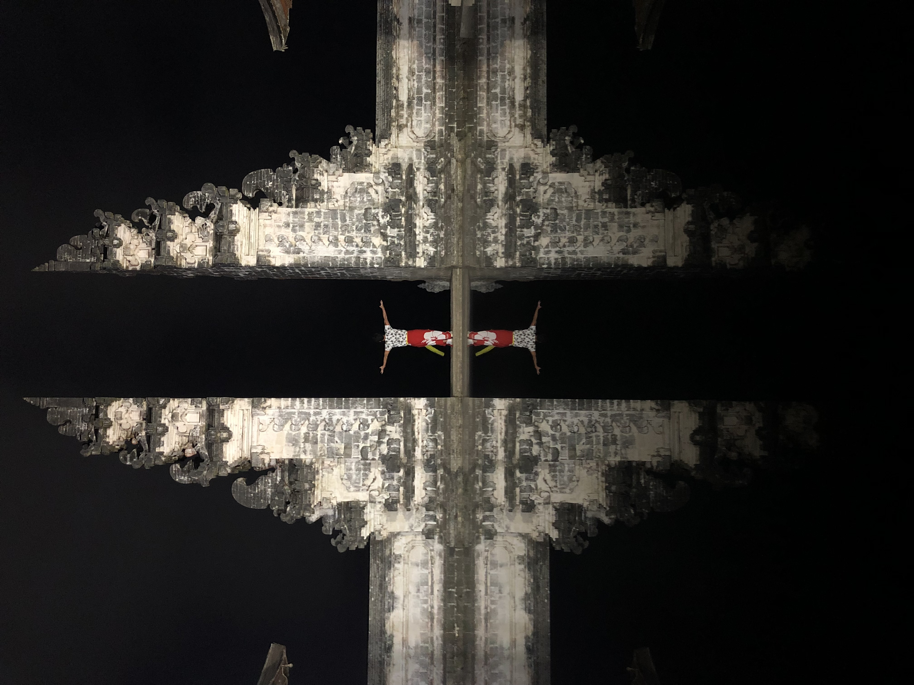

名前：大久保 学(おおくぼ まなぶ）
学歴：静岡市立清水商業高等学校
（現 静岡市立桜が丘高等学校）
▶︎拓殖大学商学部経営学科
職歴：（株）東武百貨店
紳士服部 スタッフ ３年半
食品部 企画担当 １年
バイヤー兼改装担当 ６年半
2020年２月末退職

退職後オーストラリアにて「食」関連のビジネスを始めようとするも
コロナの影響にて入国できず、一時断念。活動の場を日本にシフト。
現在は、フリーランスのwebエンジニアとして活動しており、
企業・お店のホームページやランディングページ、ショッピングサイトなどの作成や、
営業マンやモデルなどを中心とした、個人のプロフィールサイトの作成を手がけております。
また、百貨店にて培ったバイヤースキルや、eatobuのニコデリを１から造りあげた
小売業のマーケティングスキルを基盤に、
フードコンサルタント（小売）としても活動しております。
商品の展開方法、売上を上げるための施策、新商品考案、等のアドバイスを致します。
今後はオーストラリアでも目をつけていたキッチンカーを日本でも展開予定。